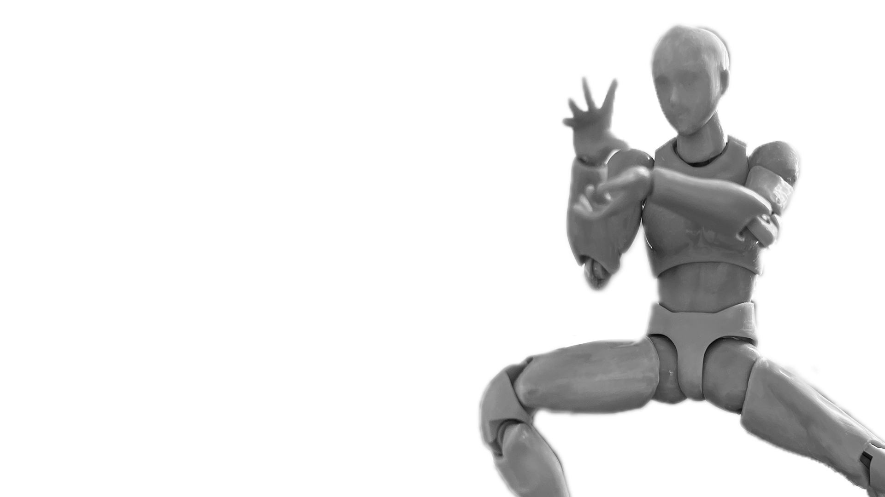
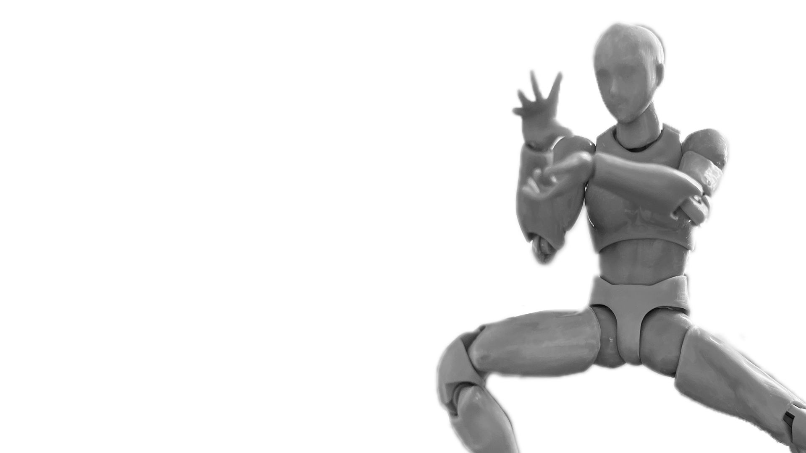

Name - Kamehameha
Origin - Dragon Ball (Chapter 14)
Date - December 1984
By - Akira Toriyama
Master Roshi invented this move that concentrates chi into his hands to shoot out in a beam form. This is the first move the protagonist learned and has continues to use all the way to today.